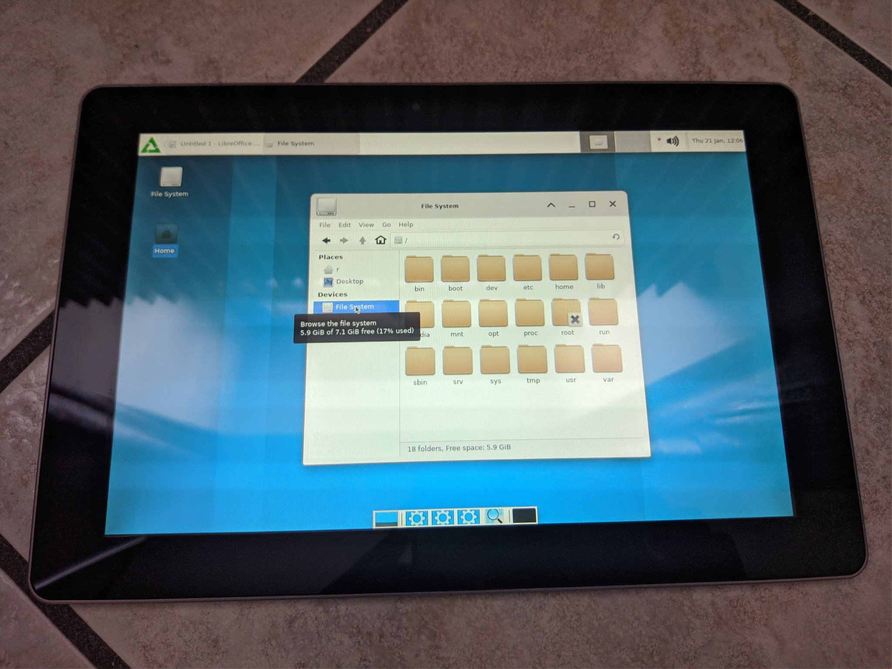

Pegatron Chagall (pegatron-chagall)
|
 Fujitsu M532 (Pegatron Chagall rebrand) running postmarketOS | |
| Manufacturer | Pegatron |
|---|---|
| Name | Chagall |
| Codename | fujitsu-m532 / pegatron-chagall |
| Released | 2012 |
| Category | testing |
| Original software | Android 4.0.3 (kernel 2.6) |
| Hardware | |
| Chipset | Nvidia Tegra 3 (T30) |
| CPU | Quad-core 1.4 GHz Cortex-A9 |
| GPU | NVIDIA ULP GeForce GPU 12 cores |
| Display | 1280x800 IPS LCD |
| Storage | 16 GB |
| Memory | 1 GB |
| Architecture | armv7 |
| Unixbench Whet/Dhry score | 1219 |
{kind=link}
| USB Networking |
Works
|
|---|---|
| Flashing |
Works
|
| Touchscreen |
Works
|
| Display |
Works
|
| WiFi |
Works
|
| FDE |
Works
|
| Mainline |
Works
|
| Battery |
Works
|
| 3D Acceleration |
Partial
|
| Audio |
Partial
|
| Bluetooth |
Works
|
| Camera |
Broken
|
| GPS |
Partial
|
| Mobile data |
Broken
|
| SMS |
Broken
|
| Calls |
Unavailable
|
| USB OTG |
Works
|
| NFC |
Unavailable
|
| Accelerometer |
Works
|
|---|---|
| Magnetometer | |
| Ambient Light | |
| Proximity | |
| Hall Effect | |
| Barometer | |
| Power Sensor | |
| Camera Flash | |
|---|---|
| Keyboard | |
| Touchpad | |
| USB-A | |
| HDMI/DP | |
| Ir TX |
Unavailable
|
| Ir RX | |
| Stylus | |
| Haptics | |
| Ethernet | |
| FOSS bootloader | |
|
This device is based on the Tegra 3. See the SoC page for common tips, guides and troubleshooting steps |
The Pegatron Chagall (commonly known as Fujitsu Stylistic M532) is a mostly business-oriented tablet (still vastly found on second-hand markets, although with outdated Android and kernel versions), sold in 2012 in different variants, mostly in Europe, with slight differences in storage size (16GB/32GB) and presence of built-in cellular modem. It resembles very closely the Asus Transformer TF201 and TF300 tablets, and offers not only very similar specs and design, but also a very similar internal hardware design. The work has been thus based on the TF300 mainline device tree, plus obvious reversing of downstream kernel sources.
Originally built by Pegatron, this device is known under many names:
- Pegatron Chagall
- Fujitsu Stylistic M532
- Olivetti Olipad 3
- Siragon 4N
- Realpad Bunaken
- DNS AirTab P110w / P110g
Some variants offer mobile connectivity (via a Huawei 3G module, probably USB rather than SDIO, that I haven't investigated yet), some 32GB storage. Mainline kernel should offer full compatibility with most if not all of these.
Mainline kernel hardware
After some work, this tablet can boot mainline kernel with LCD, touchscreen and much more working out of the box. The working mainline kernel is available in the grate branch.
| Status | Hardware | Element | Details |
|---|---|---|---|
| Y | Chipset | Nvidia Tegra T30S | |
| P | Graphics | Nvidia ULP | Basic acceleration in grate/opentegra |
| Y | RAM | K4P8G304EB | |
| Y | Display | HannStar HSD101PWW2 | |
| Y | USB | built-in | |
| Y | Backlight | PWM | |
| Y | Touchscreen | Atmel maXTouch | |
| Y | PMIC | Texas Instruments TPS65911 | |
| Y | Bluetooth | BCM4330 | |
| Y | Gyroscope | Invensense MPU3050 | |
| Y | Temperature | nct1008 | |
| Y | Proximity/ambient light sensor | ISL29023 | |
| Y | Accelerometer, gyro(s) | Kionix KXTF9 | |
| Y | WiFi | BCM4330 | |
| Y | Battery and LEDs | CG7153AM | |
| P | GPS | BCM47511 | Needs userspace driver |
| N | Rear Camera | CE1502 | No driver or docs |
| N | Front Camera | mt9d115?? | Same as Google Nexus 7. No support |
| N | Audio | WM8903 | Chip is supported, but output is silent |
| N | Modem | Huawei MU739 | Needs driver, USB bus configuration |
How to enter flash mode
> Make sure to flash the proper CWM custom recovery for this device first, or due to lacking software or hardware (e.g. key-based) hooks you won't be able to boot to fastboot again from the stock recovery if anything goes wrong!
In case you forget to do that first, but still manage to boot postmarketOS, install `reboot-mode` from repos (via ssh), `sudo reboot-mode bootloader` and fix this as soon as possible to avoid bricking if postmarketOS stops booting for some reason (which is almost bound to happen at some point).
Then boot Android, enable USB debugging, do `adb reboot bootloader` and flash the custom (CWM/TWRP) recovery image to avoid the risk of bricking.
Installation
Use the normal install procedure from pmbootstrap. "live booting" the kernel with external SD without touching the internal Android partition seems to work with mainline kernel
To-do list
As usual, several things are still to be done before the device can be considered fully supported.
- Fix audio. Seems to be nearly identical to ASUS TF300T
- Fix accelerometer mount matrix
- Enable 3G modem
- Enable cameras (write kernel drivers)
Contributors
- Clamor
- Ion Agorria
- R.
Maintainer(s)
- R.
- Clamor
Users owning this device
- R (Notes: Mainlined!)